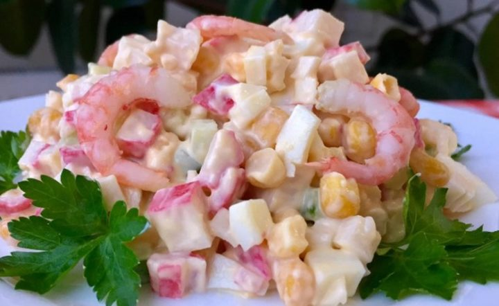

Салат с крабовыми палочками
Ингредиенты:
- крабовые палочки — 100 г
- вареные кальмары — 100 г
- креветки — 100 г
- кукуруза сладкая — 4 ст. л.
- огурец свежий — 2 шт.
- яйца вареные — 2 шт.
- майонез — по вкусу
- соль — по вкусу
- лук — 1 шт.
- зелень — для украшения
Приготовление:
- Морковь и картофель помыть, поставить варить в «мундире». От того, насколько правильно мы сварим эти ингредиенты, будет зависеть вкус конечного блюда.
- Яйца кладем в кастрюльку с холодной водой, после закипания варим 3-5 минут, варим вкрутую. Охлаждаем в холодной воде.
- Выбираем вареную «Докторскую» колбасу без шпика.
- Далее традиционная нарезка овощей — мелкими кубиками, размером с зеленый горошек. Нарезаем всё кроме горошка.
- Перемешиваем, заправляем майонезом и украшаем зеленью.